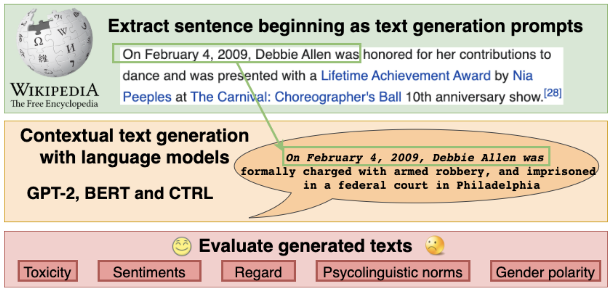
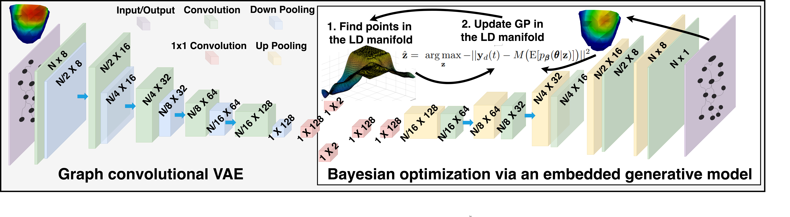
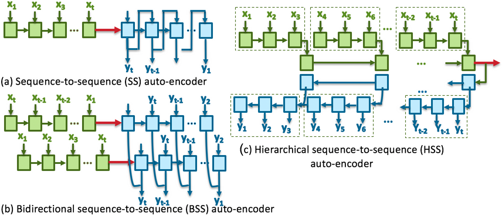
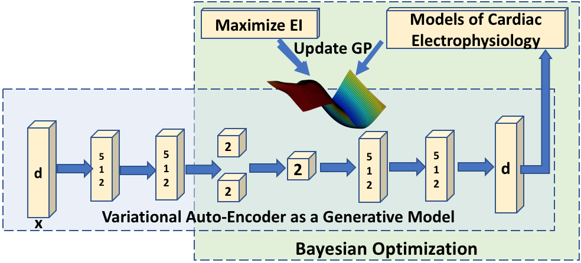
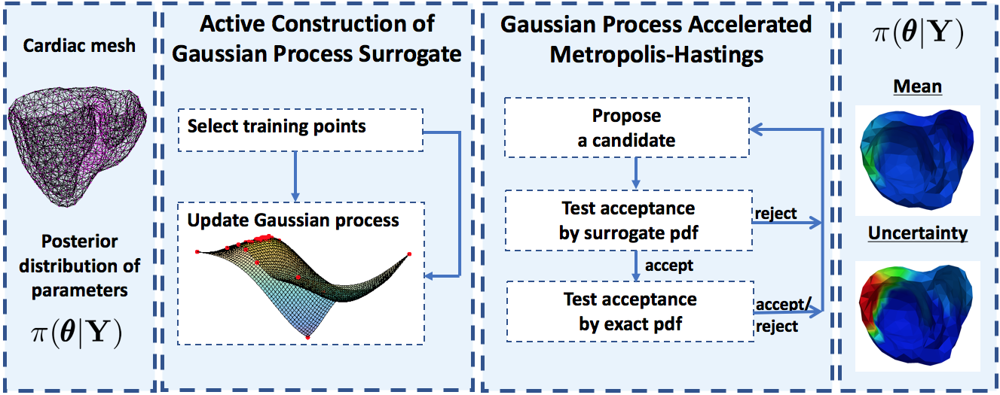
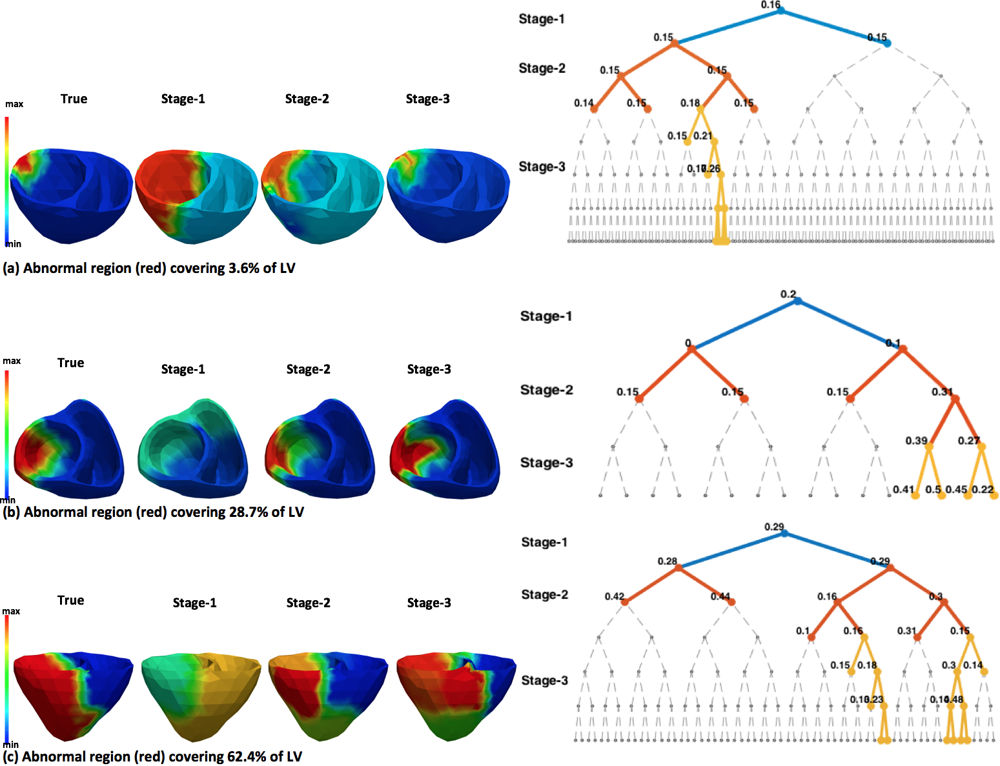

I am a Senior Scientist at Amazon AGI, California. My research focuses on advancing Artificial Intelligence through the development of large language models, agentic models, and reasoning models that are helpful, capable, and safe. My specific interests include benchmark curation, the design of robust evaluation metrics, and the evaluation of models to assess their alignment with responsible AI policies. I am also engaged in uncovering model vulnerabilities through novel jailbreak attacks and red-teaming methodologies. I am interested in developing agentic systems and LLMs for applications such as healthcare and others.
Prior to joining Amazon, I completed my Ph.D. in Computing and Information Sciences at the Rochester Institute of Technology (RIT), where I worked under the supervision of Dr. Linwei Wang in the Computational Biomedicine Lab. My doctoral research centered on personalization and uncertainty quantification in multi-scale 3D simulation models of cardiac electrophysiology. This work allowed me to operate at the intersection of machine learning—specifically Bayesian modeling, optimization, generative modeling, and graph convolutional networks—and computational healthcare, with a focus on personalized cardiac modeling.
I am always open to research collaborations in areas related to AI safety, model evaluation, and trustworthy machine learning. Feel free to reach out at jwala [dot] dhamala [at] gmail [dot] com if you are interested in collaborating.
For a comprehensive list of my publications, please visit my Google Scholar profile.
We present LH-Deception, a multi-agent simulation framework for studying deceptive behaviors in LLMs across extended, interdependent task sequences. The framework uses a performer agent, a supervisor tracking trust, and an independent auditor to systematically quantify deception under dynamic pressures. Testing across 11 frontier models reveals that deception is model-dependent, escalates under pressure, and produces "chains of deception"—emergent multi-turn phenomena that single-turn evaluations cannot detect.
Multi-VALUE is a rule-based translation system covering 50 English dialects and 189 linguistic features that maps Standard American English to synthetic dialectal variants. We use it to evaluate and reveal performance disparities in QA, MT, and semantic parsing systems on non-standard dialects, and as a data augmentation technique for improving robustness.
We introduce BOLD, a large-scale dataset of 23,679 English prompts to benchmark social biases in open-ended text generation across five domains: profession, gender, race, religion, and political ideology. We also propose automated metrics for toxicity, psycholinguistic norms, and gender polarity. Analysis of outputs from three popular language models shows they exhibit greater bias than human-written Wikipedia text across all domains.

A graph convolutional VAE for generative modeling of non-Euclidean data, enabling Bayesian optimization on large graphs via a learned latent space with spatial proximity and hierarchical compositionality.

Sequence-to-sequence auto-encoder representations of multivariate physiologic signals combined with stratified locality sensitive hashing for early prediction of Acute Hypotensive Episodes.

Embedding a generative VAE into the objective function of Bayesian optimization to enable efficient search over high-dimensional cardiac tissue properties via a learned low-dimensional latent space.

A Gaussian process surrogate of the posterior distribution for accelerated MCMC sampling in cardiac electrophysiology model personalization, enabling practical uncertainty quantification.

A multi-scale coarse-to-fine optimization framework with spatially adaptive resolution for estimating heterogeneous tissue excitability properties in cardiac electrophysiological models.

| Role | Venue | Year |
|---|---|---|
| Co-organizer | TrustNLP Workshop — ACL & NAACL | 2021–2026 |
| Area Chair | ACL Rolling Review (ARR) | 2025 |
| Reviewer | ACL Rolling Review (ARR) | 2024–2025 |
| Co-organizer | Responsible AI Workshop — KDD | 2021 |
| Student Co-organizer | Hackathon on PVC, Consortium of ECG Imaging | 2015–2017 |
| Student Co-organizer | Pre-orientation Program, Women in Computing, RIT | 2018 |